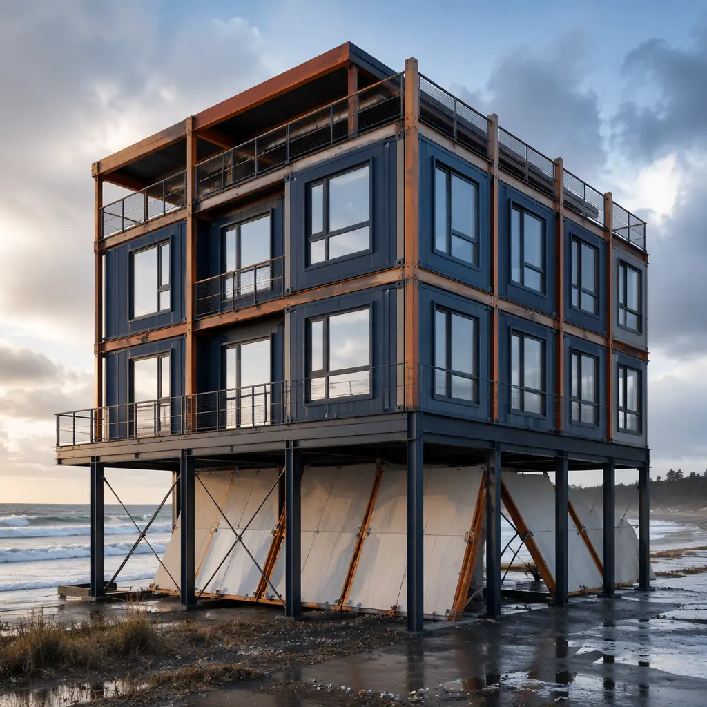
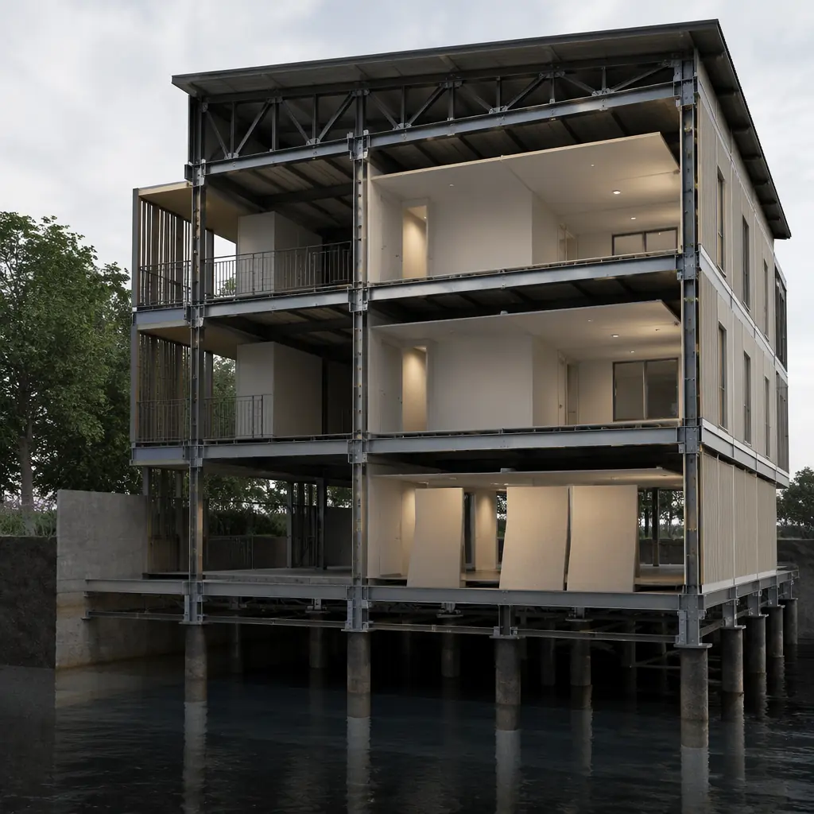
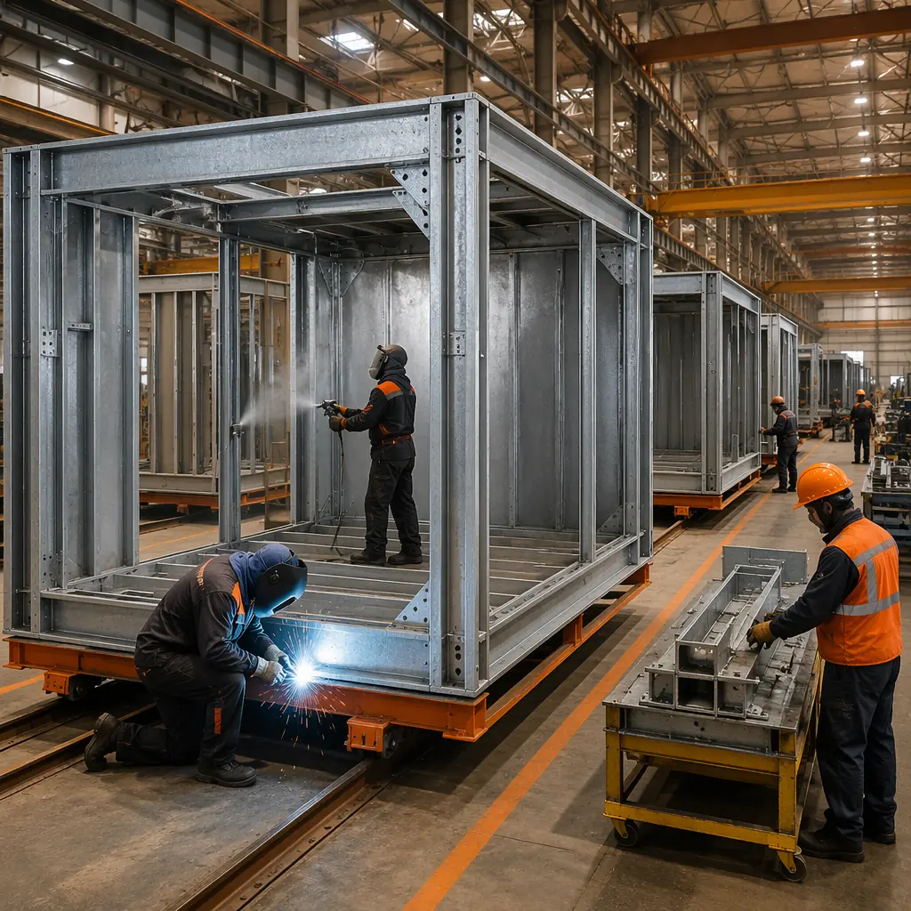
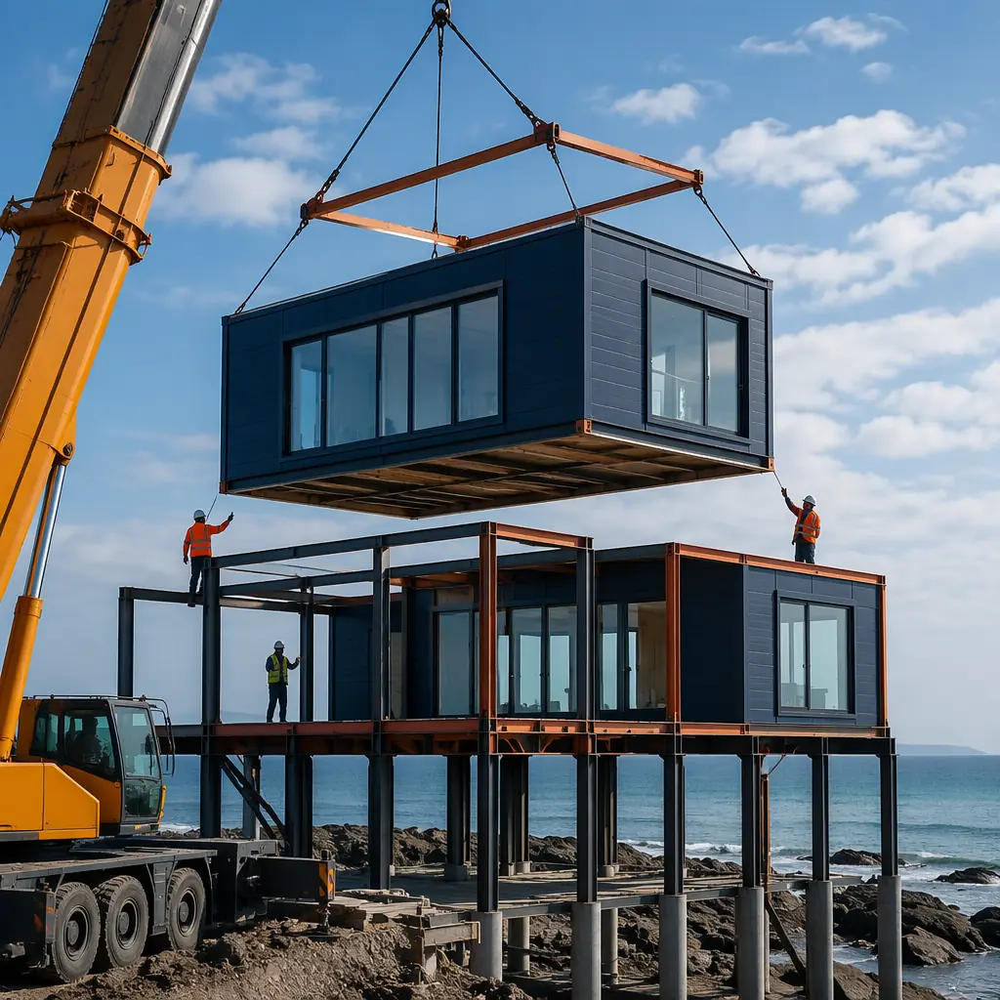

Coastal construction has always been demanding — salt spray, high winds, storm surge, and corrosive humidity punish buildings year-round. But the calculus has changed. NOAA data shows that billion-dollar weather and climate disasters in the US have increased from an average of 3.3 per year in the 1980s to 22 per year in the 2020s. For developers building in coastal zones, flood-resistance isn't a feature — it's a survival requirement. Modular construction offers a fundamentally different approach to building in these environments: factory precision for weatherproof assemblies, steel-frame structures that resist rot and corrosion, and an accelerated timeline that reduces weather-exposure risk during construction itself.

Why Coastal Zones Demand Different Construction Thinking
Building codes in coastal flood zones — FEMA Special Flood Hazard Areas (SFHA) Zones V and A in the US, and equivalent designations under Eurocode and the UK Building Regulations — impose requirements that conventional site-built construction handles poorly:
- Elevated foundations. The lowest occupied floor must sit above the Base Flood Elevation (BFE) plus freeboard, typically 1–3 feet above the 100-year flood level. For Zone V (wave action zones), this means structures on open pilings or columns, not solid foundation walls.
- Breakaway walls. Enclosures below BFE must be designed to collapse under hydrodynamic forces without damaging the structural frame above. Site-built breakaway walls require precise engineering that's difficult to execute consistently in the field.
- Corrosion resistance. Salt-laden air accelerates steel corrosion by a factor of 3–5 compared to inland environments. Standard construction fasteners, connectors, and reinforcement steel degrade years earlier in coastal settings.
- Wind uplift resistance. Hurricane-prone regions (wind zones up to 195 mph design wind speed) require continuous load paths from roof to foundation. Every connection in the chain must be engineered and verified.
Modular construction addresses each of these requirements through factory-controlled processes, not field-dependent workmanship. For projects in high-seismic coastal zones where both wind and earthquake forces apply, see our comprehensive guide to modular fire safety and structural resilience.

Steel Frame Systems: The Rot-Proof Alternative
Wood-frame construction in coastal zones faces an unavoidable enemy: moisture. Even pressure-treated lumber carries a limited service life in high-humidity, salt-spray environments. The American Wood Council rates properly treated marine-grade lumber at 20–30 years in ground contact, but in practice, coastal buildings show signs of wood degradation within 15–20 years, particularly at fastener penetrations where treatment is compromised.
MODURA's modular systems use hot-dip galvanized structural steel frames with a minimum coating thickness of 85 microns (G90 equivalent), providing corrosion protection rated for 50+ years in C4 (high-corrosivity coastal) environments per ISO 9223. The steel frame is fabricated, welded, and coated entirely within the factory, eliminating the field-welding and touch-up painting that creates weak points in conventional steel construction. For projects within 500 meters of breaking surf (Zone V), we upgrade to marine-grade stainless steel connectors at all bolted joints, increasing the system cost by approximately 3–5% but eliminating the primary failure mode for coastal steel structures.
The steel frame's inherent resistance to mold, rot, and termite damage also eliminates the ongoing maintenance costs that plague wood-frame coastal construction. For a detailed comparison of structural systems across building types, see our modular vs traditional construction analysis.

Foundation Systems: Modular on Pilings
The most challenging aspect of coastal construction is the foundation-to-building interface. Site-built structures require a complex choreography: drive pilings, cast pile caps in the wet, build the elevated floor platform in the air, then construct the building on top. Each step exposes partially completed work to weather, and each interface between subcontractors (piling contractor, concrete contractor, framer) creates coordination gaps where load path continuity can break.
Modular construction simplifies this sequence. Piling and pile caps are completed first — a conventional scope handled by local foundation contractors familiar with regional soil conditions. The modules then arrive with the structural floor frame already integrated into the module base. Each module is craned directly onto the pile cap grid and bolted down through pre-engineered connection points. The module-to-module connections complete the continuous load path from roof to foundation in a single craning operation. This approach has been validated on MODURA projects in Southeast Asian coastal zones, Caribbean resort developments, and US Gulf Coast sites.
Envelope Integrity in Hurricane Conditions
Water intrusion during hurricanes is rarely about rainwater falling on the roof — it's about wind-driven rain penetrating the building envelope at pressures of 30–50 pounds per square foot. The ASTM E1105 water penetration test simulates these conditions by spraying water at the envelope while applying a pressure differential. Site-built envelope assemblies pass this test at the mockup stage (when the best crew does their best work) but frequently fail at the production stage — a well-documented problem in Florida and Gulf Coast construction defect litigation.
Factory-built modules reverse this dynamic. The envelope is assembled by a dedicated crew working on the same assembly line day after day. Quality is consistent by design, not by inspection. MODURA modules achieve ASTM E1105 compliance at every production module, verified by in-factory water spray testing before the module leaves the line. For developers, this translates to dramatically lower insurance premiums — our insurance and risk management guide explains how factory-tested envelope integrity reduces wind-damage claims by an estimated 60–70% compared to site-built equivalents in coastal zones.

FEMA Compliance and NFIP Premium Reductions
The National Flood Insurance Program (NFIP) Community Rating System (CRS) rewards buildings that exceed minimum flood-resistance requirements with premium discounts of up to 45%. Modular construction qualifies for multiple CRS credits:
- Higher freeboard. Modular buildings can economically achieve 3–4 feet of freeboard above BFE (versus the 1-foot minimum) because the elevated foundation is part of the steel frame design, not an add-on cost.
- Enclosed area below BFE. Modular design naturally minimizes below-BFE enclosed space. The module floor cassette itself forms the structural diaphragm at the elevated level, with only the open piling grid below.
- Construction materials credit. NFIP rates flood-resistant materials (Class 4 or 5 per FEMA Technical Bulletin 2) with lower premiums. Steel frame, concrete floor cassettes, and fiber-cement cladding — standard in MODURA modules — all achieve Class 4 or 5 ratings.
For developers evaluating the financial case, the combined effect of lower construction cost (15–20% savings from factory efficiency, detailed in our cost per square foot guide), shorter construction timelines (40–50% faster, covered in our ROI developer's guide), and reduced insurance premiums produces a compelling investment case for coastal modular projects.
Case Pattern: Caribbean Resort Modular Deployment
MODURA has delivered multiple resort projects in Caribbean coastal zones where the construction window is constrained by hurricane season (June–November). The modular approach compresses the weather-exposed construction period from 14–18 months (conventional) to 4–6 months. Foundation work proceeds during the dry season (December–May), modules are fabricated year-round in the factory, and the craning and connection phase requires only 6–8 weeks of favorable weather. This schedule compression is not merely convenient — it's the difference between completing before the next hurricane season or gambling on a 12-month weather window that may not hold.
The same pattern applies to Gulf Coast multi-family developments, Southeast Asian hospitality projects, and Pacific Island institutional buildings. For related applications in extreme environments, see our cold storage and temperature-controlled modular facilities and emergency housing for disaster relief.